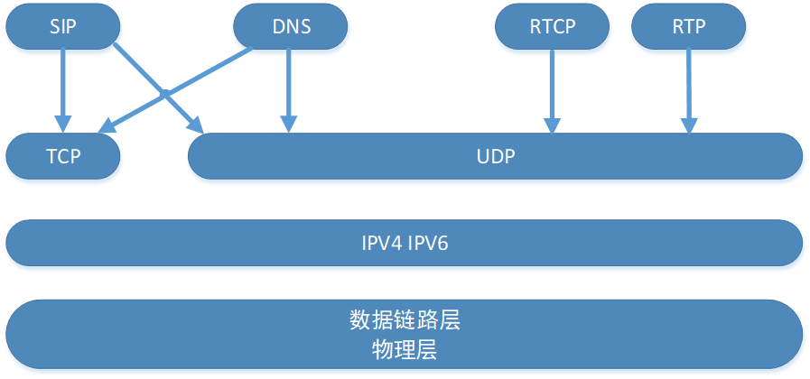
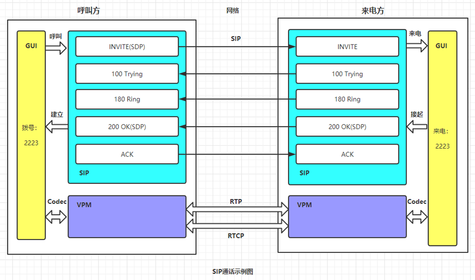
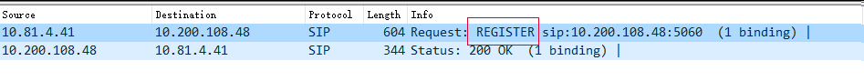
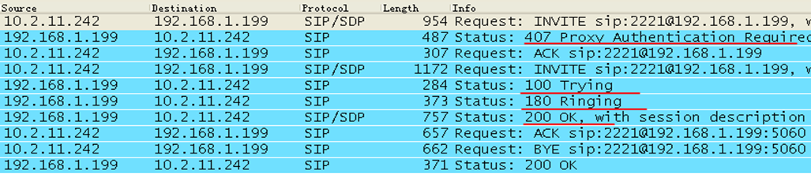
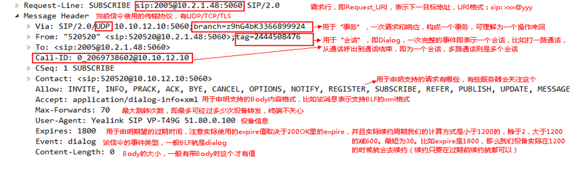
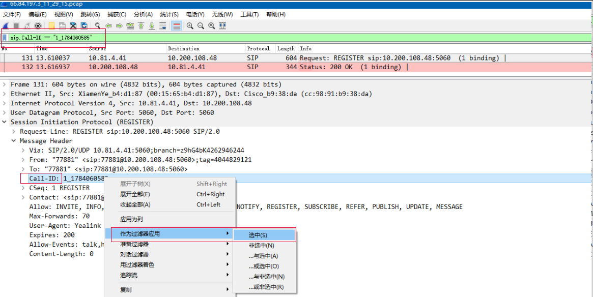
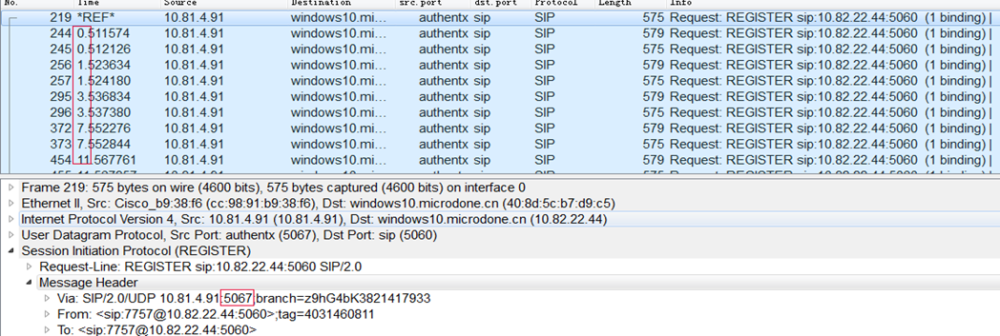

目前VOIP领域主流两大协议分别是SIP（话机类）和H323（视频会议）。
SIP是一个应用层的控制协议，可以用来建立、修改和终止多媒体会话（或者会议）。
SIP是和HTML一样的基于文本语言的一种网络通讯协议，SIP消息分为请求和响应两类。

物理层（网口）-数据链路层（CDP、ARP）-网络层（IPV4/IPV6）-传输层(TCP/UDP)-会话层-表示层-应用层； SIP/DNS/RTCP/RTP ***应用层协议；
TCP/UDP ***传输层；
IPV4/IPV6 *** 网络层；
SIP在话机功能中的逻辑关系：

GUI：图形用户界面（Graphical User Interface，简称 GUI，又称图形用户接口）是指采用图形方式显示的计算机操作用户界面；
SIP：应用层的控制协议，建立、修改和终止多媒体会话，SIP消息分为请求（invite）和响应（200 OK）两类。
VPM：传输RTP和RTCP，通过编解码（需要协商codec）发送音频数据 。
- 某某摘机输入对端号码，此时GUI会告知SIP，由SIP向对方发起通话请求；
- SIP消息通过网络为信道媒介完成传输到被叫方；
- 对端收到SIP请求，告知GUI，GUI此时会显示来电者的信息并响铃；
- 对端接起来电，GUI告知SIP，SIP向对方发起200 OK响应；
- 某某收到响应，SIP通知GUI，GUI完成通话建立，此时界面进入到通话状态，开始计时；
- 通话过程中的音频数据则由VPM控制，通过传输RTP数据完成两边的音频数据交互。
关键词：SIP;VOIP;
术语描述
- SIP:Session Initiation Protocol，会话初始协议,是一个基于文本的应用层控制协议，用于创建、修改和释放一个或多个参与者的会话；
- VOIP:基于IP的语音传输,Voice over Internet Protocol,是一种语音通话技术，经由网际协议（IP）来达成语音通话与多媒体会议，也就是经由互联网来进行通信。
请求类消息
话机向服务器发起请求时，报文的请求类型，请求是用于建立通信的代码
比如话机注册时，需要向服务器发送注册请求：

REGISTER：注册，向服务器注册，让服务器知道自己的存在；
SUBSCRIBE：订阅，用于向服务器申请使用某些功能；
NOTIFY：通知，用于通知对方某些信息，一般和SUBSCRIBE配套使用；
INVITE：邀请（呼叫），用于呼出呼入；
CANCEL：取消，用于取消通话，一般是在通话未建立前，取消通话使用该消息；
BYE：挂断，用于挂断结束通话，一般是通话建立后，结束通话使用该消息；
PRACK：临时确认应答，用于确认是否收到18x，一般是18x里有100rel，才需要发；
UPDATE：更新，一般用于通话中通话参数刷新，也用于Sesstion Timer；
REFER：转接，用于转接通话；
INFO：信息，一般是服务器用于通话中推送信息给终端；
PUBLISH：发布信息，与NOTIFY类似，区别是该消息是会话外；
MESSAGE：消息，目前仅用于短信；
OPTIONS：可选消息，一般用于扩展使用，目前keepalive也可使用该消息；
ACK：确认应答，用于指定响应的应答（常见如200OK，其他响应应答如3xx、4xx）。
响应类消息
SIP的响应：根据不同的情况, 用数字标识
1xx： 1xx: 临时/信息响应；
2xx： 成功响应；
3xx： 重定向响应；
4xx： 客户端出错，表示语法出错；
5xx： 服务器出错，表示服务器不能完成合法的请求；
6xx： 全局响应，表示任何服务器都无法完成的请求。
比如：

图示说明：
1.当用户第一次发送INVITE 的时候服务器返回的是一个407需要身份验证。***407表示服务器告知终端需要携带鉴权信息才能被正确响应；
2.认证消息包含在第二次发送的INVITE中。 ***终端的第二个请求INVITE中此时会携带鉴权信息；
3.服务器收到INVITE后返回100trying。 ***100表示临时响铃；
4.10.2.11.167响铃返回180ringing。 ***180表示信息响铃，此时表示响铃；
5.10.2.11.242收到200ok后停止回铃音表明已接通。 ***200 OK，表示服务器成功响应终端的请求；
6.第二个ACK是单独的一个事务；
7.10.2.11.167先断开连接产生一个BYE消息。 ***终端发起Bye请求；
8.10.2.11.242返回一个200ok确认收到BYE终止对话。 ***200 OK 响应Bye请求，通话结束。
SIP消息的头域
一个SIP消息是由SIP头域、消息正体和其他部分组成。
事务的区分是通过Via域中的branch值来决定的，branch值相同代表同一个事务（Transaction）系列
对话的唯一标识（Dialog ID）：Dialog ID相同就是在同一个会话里；往后只要查看Dialog ID是不是一样的，就可以确定是不是在同一个会话里。
Request_URI：请求行，即目标地址，信令能不能达到对方，和该头域有一定关系；
Via域：用于记录由有助于将响应路由回始发者的请求所采用的SIP路由；
From域：表示请求的发起者；
To：目标，注意如果是接收方，该头域会用来匹配账号，即用来确定是发给哪个账号；
Call-ID：经常用于标识会话，抓包时用颜色标记可以清楚知道哪些信令属于同一个会话；
Cseq域：包含一个整数和一个请求的名字，该数字是顺序递增的，每当对话中发起一个新的请求都会引起这个数字的顺序递增；
Contact：发送方的联系地址，用于会话后续请求的目标地址（所以通话中请求发错地方一般都是因为这个地址）；
Max-Forwards域：适用于任何请求方式中，用来限制前转请求的代理或者网关的数目，每经过一个，其值减一，如果域值为0，则接收者禁止前转此请求；
Contact-type域：包含了消息正文的描述；
Contact-length域：包含消息正文的长度（字节数）。

重点：对于日常SIP问题分析时，可以通过过滤Call-ID作为当前会话的唯一表示，帮助我们迅速定位到关键点：

SIP中一些重要概念
T1：0.5，用于SIP重传定时器，每次重传的间隔标准是T1、2T1、4T1、8T1…（针对UDP）
T2：4，每次重传间隔的最大值，即上述间隔最大不能超过T2，即默认4秒
- 使用UDP来传输SIP时，消息的丢失和接受消息的顺序错乱都是有可能的。因为UDP只能保证传输的内容是无错的，但是不能保证传输的内容一定会到达目的地。
- Request发送之后启动T1计时器。如果在T1时间过后都没有收到response，就要重发request。如果收到了一个临时的response（1xx），T1就被忽略，而一个时间更长的计时器T2就开始计时。如果在T1时间过后都没有收到response，就要重发request。
- 每次重发request之后，计时器就会翻倍，但最大不超过T2。如果超过T2，每次就按T2时间重发。在重发了10次之后，这种指数级的增长过程会停止。

T4：5，应答重传的等待时间（如ACK)
Local SIP port：本地SIP监听端口，针对UDP/TCP
TLS SIP port：本地SIP TLS监听端口